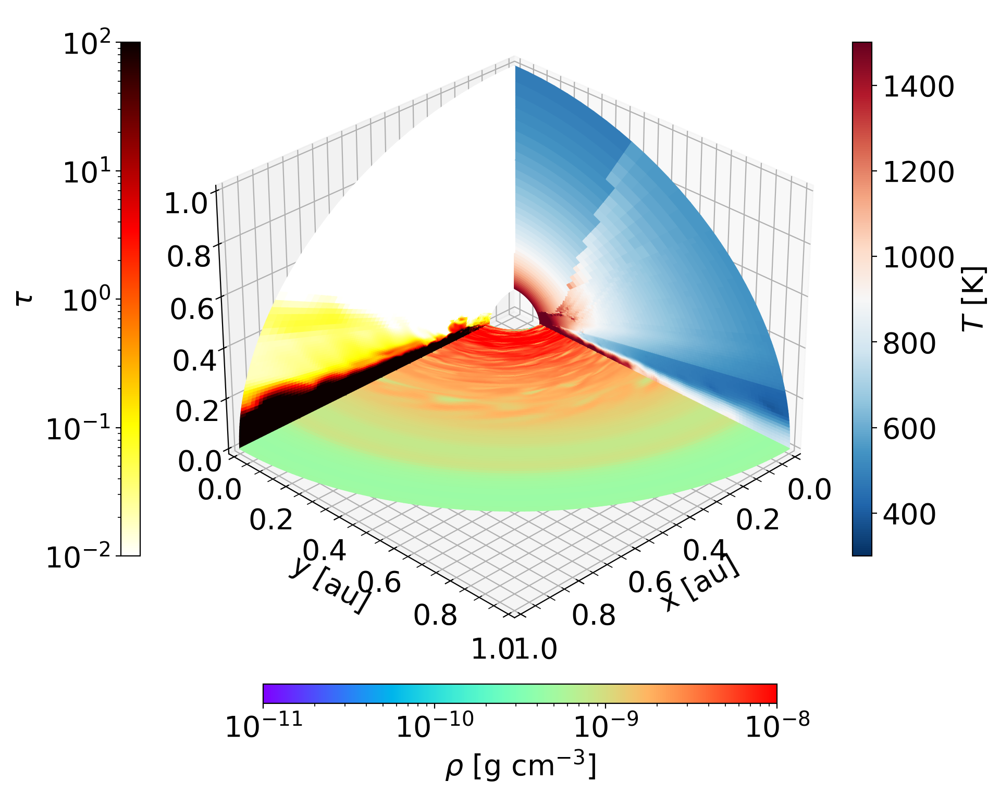
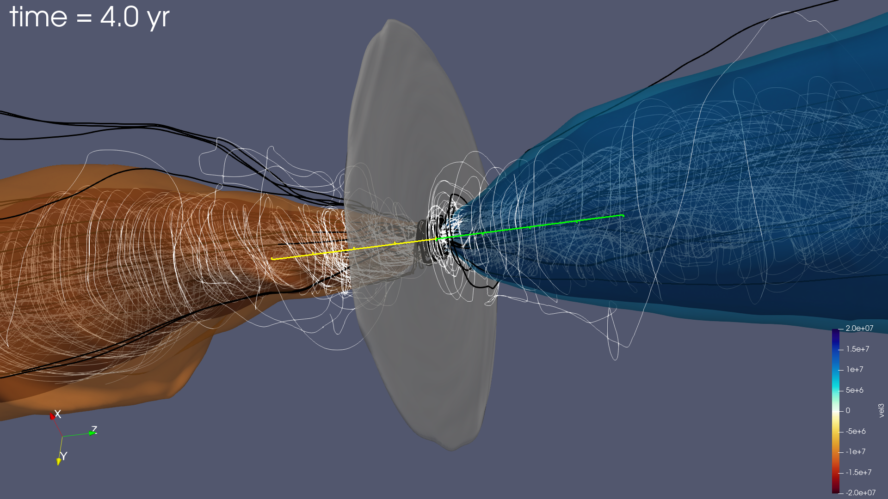
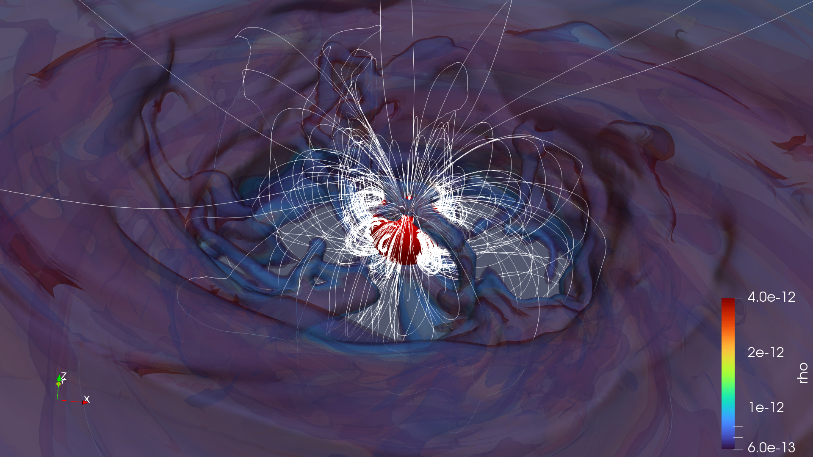
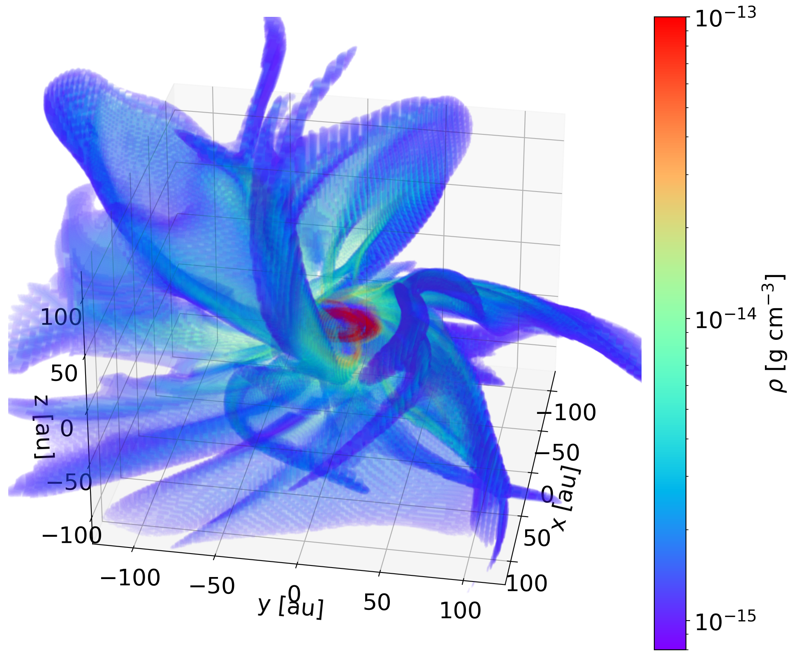
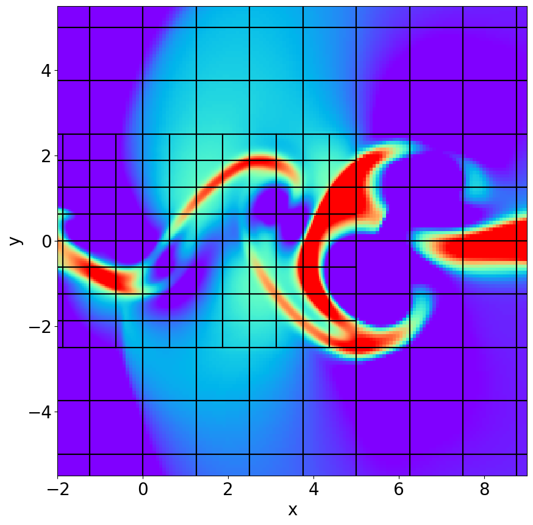
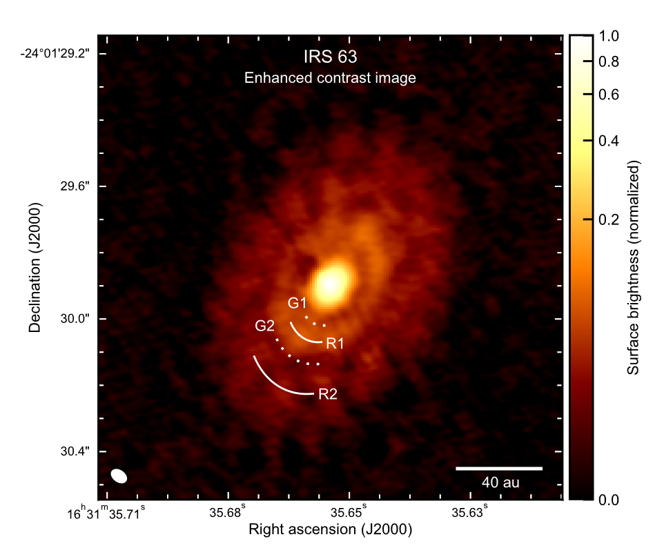

Numerical modeling of star formation and protoplanetary disks, and their connection to the solar nebula and meteorites.
Research interests
Projects
Triggering and Long-term effects of FUor-type outburst
Circumstellar disks are often modeled as cold and quiescent, with a magnetically active zone near the star extending only a fraction of an au. However, energetic events like giant FU Orionis outbursts—where accretion boosts luminosity by 103–104—can dramatically reshape the disk. During these outbursts, the magnetically active zone can expand several au into normally "dead" regions, triggering MRI and leaving long-lasting effects on disk dynamics and planet formation. How such events are triggered and eventually subside remains unclear due to the complex, coupled physics involved. In this project, we use state-of-the-art radiative non-ideal MHD simulations to model both their onset and long-term decay.
Part 1: Trigging an FUor event in 2D
(on going)
Part 2: Trigging an FUor event in 3D
(on going)
Part 3: Decay and long-term effect of FUor event
(on going)

Jet launching from protoplanetary disks
Jets and outflows are commonly observed in young stellar objects (YSOs), yet their launching mechanisms remain poorly understood. In this project, we use numerical simulations to investigate how jets are launched from YSOs and to connect our models with observable signatures.
Part 1: Disk-Only Simulations
We performed 2D and 3D non-ideal MHD simulations of a magnetized circumstellar disk and found that the outflow separates into three components: a polar jet, a laminar disk wind, and an intermediate MRI-driven turbulent wind. Both the jet and disk wind are powered by toroidal magnetic pressure, despite sharing many similarities with the magneto-centrifugal model. The jet can appear one-sided due to asymmetric mass loading by MRI turbulence on one side and confinement by an avalanche accretion stream on the other.
Part 2: Including the Stellar Magnetosphere
We introduced a rotating stellar dipole field to study magnetosphere–disk interaction and found that it launches a strong bipolar jet powered by toroidal magnetic pressure. The jet operates through a “load–fire–reload” cycle along magnetic field lines connecting the star and disk: differential rotation between the two footpoints builds up toroidal field and pressure, which then accelerates gas and opens the field lines. Magnetic reconnection resets the field geometry, and because the system is inherently three-dimensional, different regions can be in different phases of the cycle simultaneously, producing a quasi-steady jet at large distances.
Part 3: Jet Propertity Dependency on Stellar Spin and Field Strength
Using 3D non-ideal MHD simulations, we show that jet properties depend sensitively on stellar rotation and magnetic field strength. All Jets are launched by "two-legged" magnetic field lines linking the star and disk, forming a characteristic "spline–tower" structure: a kinematically dominated axial jet surrounded by a toroidal-field–dominated disk wind. The balance between these components determines whether jets remain steady, become asymmetric, or are quenched. Counter-rotating jets arise naturally, indicating that observed rotation mainly reflects stellar spin rather than the jet-launching radius.
Part 4: Explore different alignment between stellar magnetosphere and disk
(on going)
Part 5: Inclusion of Radiative Transfer in Jet models
(on going)


Early Disk and Star Formation Through Collapse of Dense Core
Stars and their circumstellar disks form through the collapse of dense molecular cloud cores. Although this phase sets the initial conditions and ultimately shapes the properties of the emerging star–disk system, it remains poorly understood because it spans a wide range of spatial scales and involves complex gas dynamics as well as coupling and decoupling between gas and magnetic fields. In this project, we use numerical simulations to model this early stage, identify the key physical ingredients of protostellar envelopes, and connect them to observable signatures.
Part 1: Single Star and Disk Formation
We simulate the collapse of a turbulent molecular cloud core into a protostar and protostellar disk, including ambipolar diffusion (AD) as the dominant non-ideal MHD effect. Strong AD allows magnetic flux to redistribute effectively, enabling the formation of a large (~200 au) disk, while weak AD leads to efficient magnetic braking that prevents disk formation. The protostellar envelope forms warped “gravo-magneto-sheetlets” that channel mass and magnetic flux onto the star and disk through the disk’s upper and lower surfaces.
Part 2: Multiple System Formation via Fragmentation
In multiple star formation, the gravito-magneto-sheetlets feed into a Dense Rotation-Dominated Structure (DROD) rather than a single protostellar disk. The DROD, supported by rotation, is highly dynamic and can take irregular shapes, leading to misaligned circumstellar disks when it fragments into multiple stars. Its fragmentation is controlled by the level of magnetization, which depends on the strength of non-ideal MHD effects like ambipolar diffusion.
Part 3: Inferring magnetic field strength through observables
Using these non-ideal MHD simulations, we propose a simple method to estimate magnetic field strength based on the local gravitational acceleration and the pseudodisk’s column density. This estimate can be refined with observational data on gas kinematics and magnetic field orientation. The method has been carefully validated and calibrated with simulations and is applicable to a wide range of systems.

Code Development: "Bootes" & "Arcturus"
Computing technologies advance rapidly, yet the newest resources are often underutilized in high-performance computing (HPC) for astronomical simulations due to incompatible code. This project aims at developing software that leverages cutting-edge computational technologies to accelerate astronomical simulations.
Part 1: Bootes
The Bootes simulation code is a fluid dynamics code I developed in May 2022 at the University of Virginia, where I am completing my Ph.D. Its name comes from the Boötes constellation visible at the time of its creation, reflecting a bit of my astronomer’s schedule. The latest public version of Bootes runs on both GPU (via OpenACC) and CPU (via OpenMP), and I am currently adding MPI capabilities and modules for additional physics.
Part 2: Arcturus
The Arcturus simualtion code is a Lagrangian particle-based tool designed for post-processing hydrodynamics simulations to trace the trajectories of particles or dust. Developed as a lightweight package for ease of use and rapid deployment, Arcturus leverages known hydrodynamics data to evolve particles with adaptive time-stepping, enhancing the code's efficiency.
If you are interested in the codes, please send me an email. I'm happy to share the latest version of the codes.

Grain Growth during protostellar disk formation
Planet formation from micron-sized dust can be divided into three stages: grain growth (from micro-sized to mm/cm-sized), streaming instablity (up to 100 km-sized), and pebble accretion (> 100 km).
Observations of early planet formation and large (mm/cm-sized) dust grains in protostellar disks suggests early grain growth in protostellar environement. How do the grains grow to these large sizes?
To answer this question, we used Athena++ to conduct radiation-hydrodynamics simulation of protostellar disk formation. I developed a dust simulation code that post-processes Athena++ output and simulation dust advection and grain growth (this code later becomes the progenitors of the Bootes and Arcturus codes). We found grain growth slow in laminar protostellar disks, and a factor of 4 increase in grain growth rate is needed to produce the mm/cm-sized grains. An analytic solution of the Smolochowski coagulation equation is used to validate the simulation results, and the analytic solution provides an easy way to estimate grain growth time scale.
